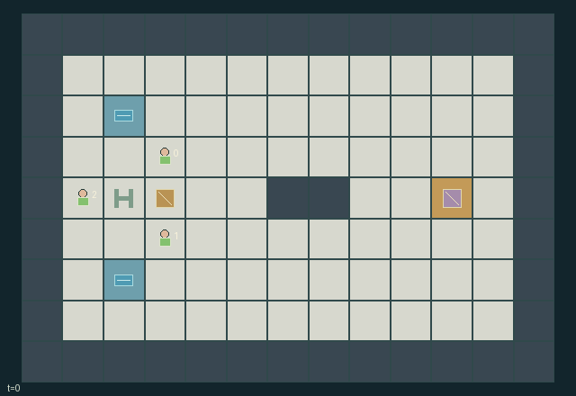

GI156 · Leeward Caravan

Deliver one heavy load across a ridge using synchronized hauling, movable wind shelter, finite water and interchangeable transport/support roles.
Identity and original contract
3 independently actionable roles; 15 discrete commands per role; 159 native observation columns per role; original horizon 128 steps. Declared per-step reward range: -0.01 to 1. Observation regime: fully_observable.
Source SHA-256: 54c4ac626a7aeaf416e5b2d2ae88649299ecaa06d9b66f37102c8d076a368c75
The objective, rewards, population, map and horizon remain original. A preview is not a success claim.
Objective and gameplay
Deliver one heavy load across a ridge using synchronized hauling, movable wind shelter, finite water and interchangeable transport/support roles.
A traveler repositioning the windbreak changes the current-step movement costs and resting recovery of others. A load needs two correctly positioned matching actions, while physical bodies and selfish shelter occupation can block travel or shade placement.
- Any two travelers can grip the opposite north/south load handles; there are no permanently assigned specialist roles.
- A matching directional command translates the whole load-and-carrier body only if all target cells are free and both carriers can pay.
- The windbreak casts a three-cell downwind shadow with lateral width one cell on each side.
- Unattached movement costs one energy; hauling costs two. Exposure adds two, and moving against wind adds one.
- Windbreak shifts happen before cost calculation and consume two energy from one adjacent unattached traveler.
- Resting in shade restores two energy. Drinking spends one water to restore up to four energy.
- Water gifts and well draws transfer real finite units. Wells do not refill.
- Wind rotates east, south, west and north in eight-tick blocks. The ridge permits alternative upper and lower routes.
- Arrival ends naturally; otherwise the horizon is 128.
Ending: The load center reaching (10,4) terminates naturally. Energy or water exhaustion alone does not fabricate a failure: waiting, shade and partner support remain possible; unresolved play truncates at 128.
What this game explores
Resource commons & externalities: An action changes a persistent resource or burden that another role also encounters. Compare extraction with maintenance and record the downstream resource trajectory.
Joint transport & shared access: Positions, load geometry, occupancy and persistent access constrain whose action can succeed next. Distinguish physical handoff, shared controls and simultaneous force from a cosmetic cooperation label.
Survival, protection & rescue: Protection and repair alter another role's future feasible actions. Record losses, exposure, rescue and infrastructure as well as delivery; survival is determined by the actual kernel.
These are questions supported by rule structure, not observed learning effects.
Play it: operating walkthrough
crucibles play --game gi156Keep Python running and open its printed address. Select this game, set a seed and press Create session. The game itself is always English.
Assign a role range to Host with Assign / take over, or Assign all roles. Invite a second participant with Create player invitation, then assign a disjoint subset. Every original role is available.
For every owned role choose a legal command and press Queue. Arrow keys / WASD queue a declared directional action for the current role camera when available. Space or Advance one joint step advances everyone together. Non-directional games use the selectors.
Unqueued roles use the labelled untrained uniform-legal policy. Take over or release roles before the next step without resetting. Full-state debug is privileged and permanently logged; role cameras preserve permissions. Close the session to retain logs. Server restart does not restore sessions.
Complete command reference
IDs and English labels exactly match the manifest. Availability depends on role, resources, location and phase. An available action can still have no productive effect.
0·Rest; gain two energy only inside current windbreak shadow
1·Move north or request synchronized northward haul
2·Move east or request synchronized eastward haul
3·Move south or request synchronized southward haul
4·Move west or request synchronized westward haul
5·Attach to a north/south load handle, or release
6·Shift adjacent windbreak north, spending two energy
7·Shift adjacent windbreak east, spending two energy
8·Shift adjacent windbreak south, spending two energy
9·Shift adjacent windbreak west, spending two energy
10·Drink one water to restore up to four energy
11·Give one water to adjacent agent 0
12·Give one water to adjacent agent 1
13·Give one water to adjacent agent 2
14·Fill one water from nearest adjacent finite well
Roles and capability identifiers
These original role names describe capabilities, not interchangeable skins. Check each owned role's legal selector before planning handoffs.
agent_0·Interchangeable traveler 0; starts at north load handle
agent_1·Interchangeable traveler 1; starts at south load handle
agent_2·Interchangeable traveler 2; starts near the movable windbreak
Information and observation permissions
Fully observable terrain, positions, resources, grip states, wind, shadow flags, wells and event counters. The renderer displays the same fixed state variables; own id distinguishes policy roles.
The GIF is full-state debug and may reveal hidden entities or private state. Train on obs[agent], not the picture, state tree or another role's private row. Field slices and visibility are in the original manifest.
Reinforcement-learning integration
import jax
from crucibles_jaxmarl import make
env = make("gi156")
key = jax.random.PRNGKey(0)
key, rk, ak, sk = jax.random.split(key, 4)
obs, state = jax.jit(env.reset)(rk)
actions = env.sample_actions(ak, state)
obs, state, rewards, dones, info = jax.jit(env.step_env)(sk, state, actions)
done = dones["__all__"]Observations are float32 vectors of width 159; actions are scalar int32; masks have 15 entries. Supply all 3 roles each transition. Masked sampling is an engineering reference, not a trained learner.
step_env retains terminal data without reset. step performs outer autoreset and keeps terminal data in info["raw_state"] and info["raw_observation"]. Use dones["__all__"] for episode boundaries; separate completion, failure and time limit in analysis.
JIT or vmap equal identities and shapes. Split independent reset, policy and transition keys. Group different shapes explicitly; do not shrink the population or horizon. Host rendering stays outside training.
Training questions and fair evaluation
Define valid completion from the objective before fitting. Preserve original rewards and also report real deliveries/services, losses, resource state, unresolved episodes and per-role returns. Animation is not a reward signal.
An action changes a persistent resource or burden that another role also encounters. Compare extraction with maintenance and record the downstream resource trajectory.
Positions, load geometry, occupancy and persistent access constrain whose action can succeed next. Distinguish physical handoff, shared controls and simultaneous force from a cosmetic cooperation label.
Protection and repair alter another role's future feasible actions. Record losses, exposure, rescue and infrastructure as well as delivery; survival is determined by the actual kernel.
Compare memory, communication or centralized critics under matched actor information. Declare critic access; keep actor inputs role-filtered. Match partner/opponent distributions, masks, compute and checkpoint selection. Final tests never enter fitting or selection.
Independent training runs or source-pairing blocks are inferential units; episodes from one policy are not independent training replications. Save hashes, keys, versions, device, time and cost. Negative, zero, failed and indeterminate outcomes are valid. No trained checkpoint or target score is supplied.
Classification and evidence
Overlapping editorial labels are reading aids, not proof of novelty, difficulty, strategic equivalence or learning effects.
- Resource commons & externalities
- Evidence
manifest.task.objective: Deliver one heavy load across a ridge using synchronized hauling, movable wind shelter, finite water and interchangeable transport/support roles.
- Evidence
manifest.actions.10: Drink one water to restore up to four energy
- Evidence
manifest.actions.11: Give one water to adjacent agent 0
- Joint transport & shared access
- Evidence
manifest.task.objective: Deliver one heavy load across a ridge using synchronized hauling, movable wind shelter, finite water and interchangeable transport/support roles.
- Evidence
manifest.actions.1: Move north or request synchronized northward haul
- Evidence
manifest.actions.2: Move east or request synchronized eastward haul
- Survival, protection & rescue
- Evidence
manifest.task.objective: Deliver one heavy load across a ridge using synchronized hauling, movable wind shelter, finite water and interchangeable transport/support roles.
- Evidence
manifest.task.interaction: A traveler repositioning the windbreak changes the current-step movement costs and resting recovery of others. A load needs two correctly positioned matching actions, while physical bodies and selfish shelter occupation can block travel or shade placement.
Source, receipts and preview limits
The world-only English GIF replays saved untrained legal actions through the original kernel. At most 25 actual endpoints include initial and terminal state; no invented interpolation. It is full-state debug, not the role observation.
Original source, observation slices, manifest and mechanism
Native receipt · Presentation receipt
Engineering passes do not establish learning. Nonzero floating differences remain recorded and undetermined; no new tolerance was introduced. Human scores remain unverified.